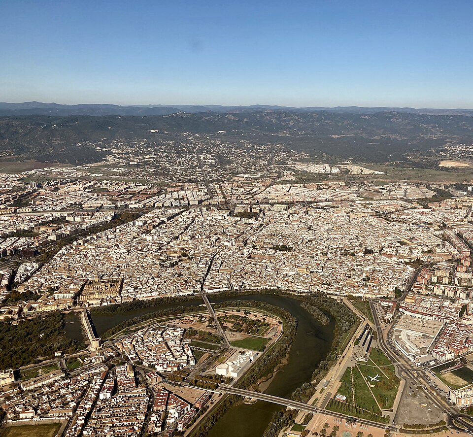

Una vista aérea de la ciudad y de algunos de sus lugares más conocidos.

Puente Romano
Mezquita-Catedral
Río Guadalquivir
Córdoba, historia junto al Guadalquivir
Córdoba se extiende a orillas del Guadalquivir y reúne huellas de distintas épocas. Desde el aire se distinguen el curso del río, los puentes que lo cruzan y el entramado de calles del casco histórico.
La Mezquita-Catedral es uno de los monumentos más conocidos de la ciudad. Sus arcos y ampliaciones reflejan siglos de historia. Muy cerca se encuentran calles estrechas, plazas y patios que forman parte de la vida cotidiana cordobesa.
El Puente Romano conecta el centro histórico con la otra orilla del río. Al recorrerlo se pueden observar la Torre de la Calahorra y el paisaje del Guadalquivir, especialmente al atardecer.
En primavera, muchos patios abren sus puertas y muestran macetas llenas de flores. Esta tradición, junto con la arquitectura y la gastronomía local, atrae a visitantes durante todo el año.
Un paseo por Córdoba permite descubrir rincones tranquilos, edificios históricos y vistas del río. Cada barrio ofrece una perspectiva distinta de la ciudad y de su patrimonio.